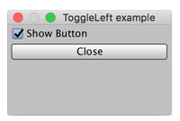

EditorGUILayout.ToggleLeft
public static bool ToggleLeft(string label,
bool value,
params GUILayoutOption[] options);
public static bool ToggleLeft(string label,
bool value,
GUIStyle labelStyle,
params GUILayoutOption[] options);
public static bool ToggleLeft(GUIContent label,
bool value,
GUIStyle labelStyle,
params GUILayoutOption[] options);
Parameters
| label | Label to display next to the toggle. | |
| value | The value to edit. | |
| labelStyle | Optional GUIStyle to use for the label. | |
| options | An optional list of layout options that specify extra layout properties. Any values passed in here will override settings defined by the style.See Also: GUILayout.Width, GUILayout.Height, GUILayout.MinWidth, GUILayout.MaxWidth, GUILayout.MinHeight, GUILayout.MaxHeight, GUILayout.ExpandWidth, GUILayout.ExpandHeight. |
Description 描述
Make a toggle field where the toggle is to the left and the label immediately to the right of it.
EditorGUILayout.ToggleLeft is similar to GUILayout.Toggle but respects the EditorGUI.showMixedValue property and handles keyboard focus consistent with other Editor controls. EditorGUILayout.ToggleLeft has the label close and to the left of the toggle. (The EditorGUILayout.Toggle has the opposite with the label at a distance from the toggle and to the right.)

Show a button if the toggle control is selected.
// Creates a new menu in the Editor called "Examples" with a new menu item called "ToggleLeft example"
using UnityEngine; using UnityEditor;
public class Example : EditorWindow { bool showBtn = true;
[MenuItem("Examples/ToggleLeft example")] static void Init() { Example window = (Example)EditorWindow.GetWindow(typeof(Example), true, "ToggleLeft example"); window.Show(); }
void OnGUI() { showBtn = EditorGUILayout.ToggleLeft("Show Button", showBtn); if (showBtn) { if (GUILayout.Button("Close")) { this.Close(); } } } }